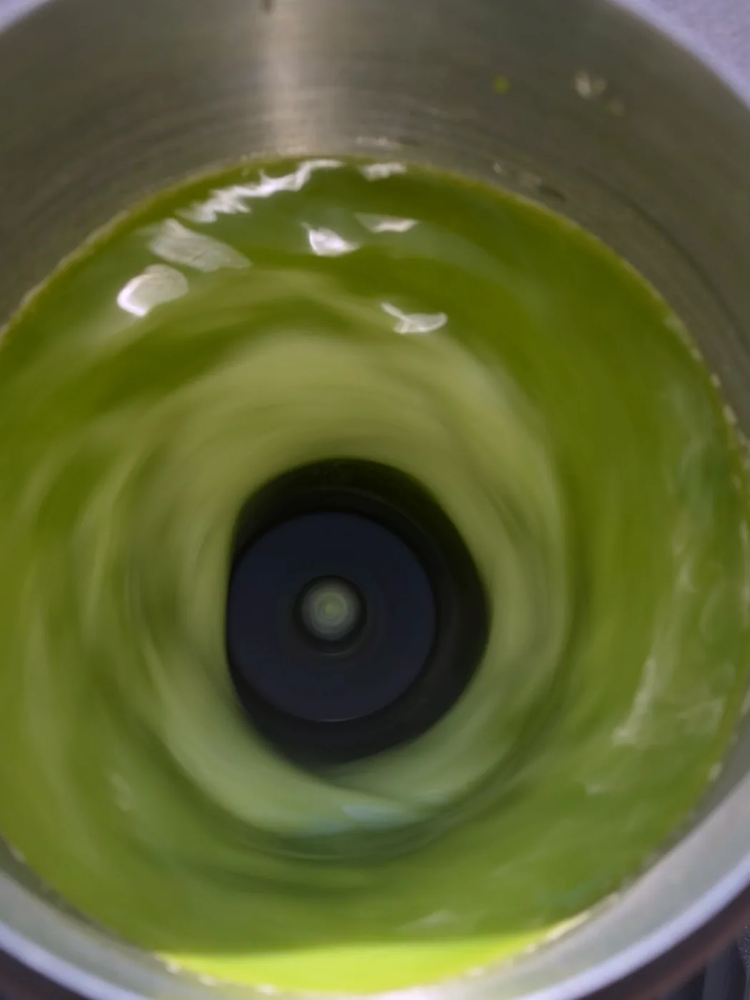
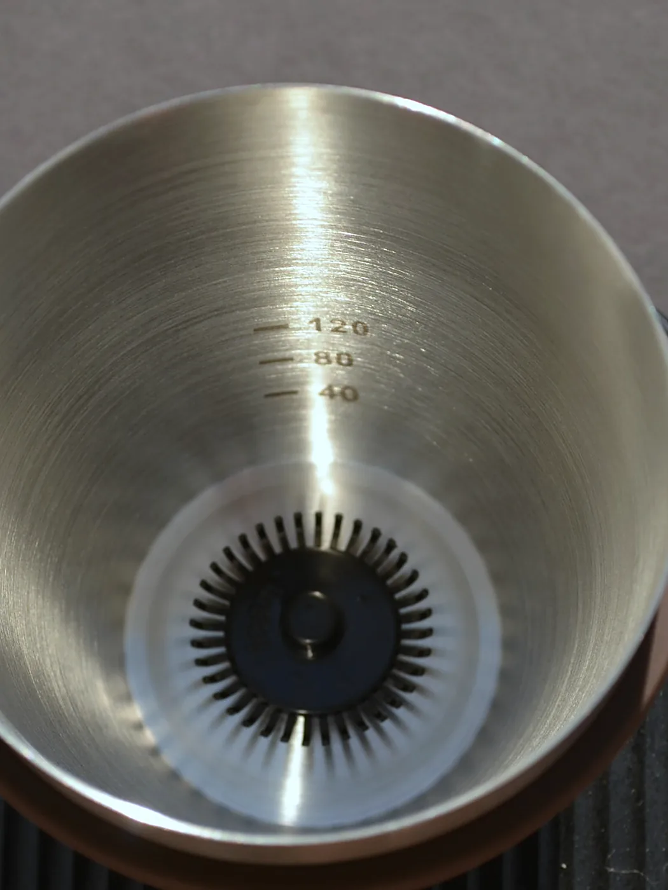

Craft
We honor a centuries-old practice with materials and engineering that earn their place beside it. Nothing decorative, nothing disposable.
We came to Matcha Sous from behind the bar, where repetition has a way of revealing what matters.

The quiet hand at workThe tea could be weighed precisely, the water measured carefully and the recipe held constant, and the final cup could still shift depending on the hand preparing it. That variability is easy to overlook when you make one matcha at a time. During service, it becomes much harder to ignore.
I could never achieve that silky microfoam on my own. Not reliably, and never in a hurry.
We were not interested in taking craft out of matcha. The sifting, the pour, the pause before the first sip: none of that needed fixing. What needed support was the one step where a good tea most often loses its way, which is the mixing itself.
So we built a sous chef. Not a replacement for the practice, but a second pair of hands within it.
Every decision, from the steel to the timing, answers to these.
We honor a centuries-old practice with materials and engineering that earn their place beside it. Nothing decorative, nothing disposable.
The bowl you make on a slow Sunday and the one you make mid-service should come from the same recipe, not the same amount of free time.
Sous handles one step and leaves the rest alone. No app, no subscription, no opinion about your tea.
One cable, a small footprint, controls that wipe clean in a pass. We sweat the details you only notice when they are missing.
We could have molded the vessel from plastic and saved on every unit. Instead we drew it from food-grade stainless steel, the alloy trusted in professional kitchens, with a seamless wall, etched 40, 80 and 120 ml measures and a spout shaped for a clean pour.
The whisk never touches your hand. A contactless magnetic drive turns it from beneath the base, so there is no gearbox to wear and nothing fragile to replace. Touch controls sit flush on the front: three presets, eighteen speeds, and a charge that lets it sit on the counter without a cord running to it.

Stainless · contactless driveA good sous chef works to a standard someone else has set. They understand the assignment, execute their part well and make the whole thing easier to repeat, without ever taking authorship away from the person in charge.
That is the arrangement here. You choose the tea, set the recipe and decide what the finished cup should be. Sous stays second in command.
Tea, water, temperature, cultivar, milk, ratios, tools and the details that separate matcha from matcha properly prepared.
Nothing is charged until it ships. Free US shipping, one-year warranty.